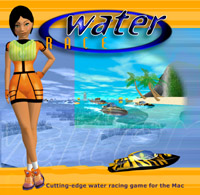

| 1
WaterRace
WaterRace is French Touch's upcoming arcade-style boat racing game. It will be the first high-speed ship racing game available on the Power Mac platform - exclusively.
WaterRace brings in addition many innovations to this concept: full 3D, detailed environments, truly open architecture of the game... with of course, a "Mac touch".
BREAKING NEWS (8/23/2000)
We have a brand new QuickTime trailer of the game in action.
Click on the "Movies" link on the left to download it.
BREAKING NEWS (7/17/2000)
WaterRace at MacWorld NY on the 3Dfx booth.
An exclusive and never shown before self demo of WaterRace will be showcased at MacWorld NY, this week, on the 3Dfx booth.
Make sure to visit the 3Dfx booth and check out the WaterRace demo! It's a unique chance to discover this upcoming highly original game.
We've been working extensively for over a month with 3Dfx to make sure the upcoming high-speed racing game WaterRace will be running with excellent performances on the Voodoo 2000, Voodoo 3000 and of course the next generation Voodoo 5500 which will be revealed in MacWorld.
Presentation
WaterRace is a high-speed ship racing game, of «arcade» type. However, it offers more than the usual arcade game.
The player is offered a choice among eight characters, each one having strong cultural roots, among nine different ships, and nine terrains located in various parts of the world.
As you will discover on the pilots page, each character has it own story and characteristics, a unique ship and of course a terrain.
WaterRace also offers easy-to-use object and terrain editors, completed with a wide library of ready-to-use objects, which will allow the player to build easily his own game levels.
Finally, WaterRace offers a large array of original musics of different styles, which fit each site and character.
Key features
WaterRace is first a team of colorful characters, each one pictured with his saliant features with respect to the main skills required for motonautical racing: agility, speed and agressivity. There is a ninth character (Leah), which cannot be chosen by the player.
WaterRace keeps in store nine high-speed ships of completely different designs. These boats are equiped with a «turbo » system which, when activated, boots the speed for a limited time only.
The ships of WaterRace can thus be used by the player provided he has gathered enough points. As game goes on, the player can build himself a set of boats among which he will be able to select the most appropriate for a given circuit.
WaterRace is played on nine closed circuits located in different parts of the world. Each circuit has been specifically designed to depict a geographical and cultural environment, dramatized by sound and light.
Each circuit offers three races: one for beginners, one for pro players, and one for the expert players.
As for ships, the player can access a circuit only if he has enough points.
Background
The WaterRace championship was created in 1989 by the former Offshore racing champion Bob Turner. It is a very special contest which gathers the elite of the motonautical world. As a matter of fact, the «WaterRace Association» recruits the best pilots in the world, in all categories. It finances the construction of their watercrafts as well as the maintenance of their teams. The funds for this rather expensive competition come from numerous sponsors who are attracted by the mighty media coverage of the spectacular contests. For instance, in order to promote the championship and to attract more sponsors, the management has created a proprietary TV system (WaterRace TV), with cameras located all over the circuits.
Because of the high costs of the championship,only eight challengers run for the title.
The particularities of this championship are on one hand the races that occur in the mother country of each competitor, and on the other hand the fact that the competitors are allowed to use the ship they want without any restrictions. This results in a bunch of unique design boats.
Each race is only accessible to the players who have earned enough points in the preceeding race (when the season begins, the competitors automatically receive enough points to participate in one or more of the first races of the season). Proceeding through the Grand Prix races, the lucky competitors who have gathered enough points will get access to the next races and new ships. These ships will constitute a fleet among which the racer can select the most suited to each circuit.
At the end of the season,the player who owns the greatest number of points is nominated «WaterRace Champion», and if he also stands among the three winners of each race, he is allowed to run for the «WaterRace Grand Champion» title against the previous season winner. This is a spectacular event, that all TV watchers look for.
The rule is simple: you have to fight till the end!
The player’s goal is therefore to run a maximum number of races, winning the first, the second, or the third place in order to race against Leah, the present title holder.
Gameplay
At the start of the game, the player must first create a pilot that will represent him in the championship. He needs to complete three steps for this: enter his name, select the difficulty - the championship runs on three difficulty levels (Beginner,Pro,Expert)-and finally select a character who will physically represent him in the game interface and in the ships thanks to texture sets. The selected character will be one of the eight competitors qualified for the racing season.
Each boat requires a minimum number of experience points to be used; each circuit (or Grand Prix) also requires a given number of experience points to enter. The purpose of the game being to race the eight Grand
Prix, the player should accumulate all the required experience points in order to gain access to each circuit and ships.
Once this condition is verified, if he was ranked in the first, second, or third place for each Grand Prix, he will have the privilege of racing against Leah,the owner of the «WaterRace Grand Champion title», on her very own site.
At the beginning of the game, the player is granted a given number of points depending on the difficulty he has chosen. These points will allow him to access circuits and ships that require a lower number of points. He also gets one or two jokers which will permit him to repeat races in which he did not earn enough points.
The Grand Prix are run in an increasing order of difficulty.The order may change with the difficulty level selected by the player, meaning that the «expert » player will not follow the same order as the «pro» player or as the «beginner» player..
For each race, the player faces seven competitors.
At the end of the race,the points the player has earned (racing time,rank, collected point bonuses…) are added to his total of points.
• If he owns enough points, he gains access to one or more new circuits and ships and so on, until he has completed the entire championship.
• If he has not gathered enough points, he can race again on the same circuit and try to improve his score, maybe using another ship he might have won later. Only the possession of a Joker gives him such a possibility.
Point system
In order to participate in a race or be able to use new ships,the player must win or collect experience points. In order to win points, the player has to have good performances of course.
Here is the scoring system related to the performances:
• First place: 400 points
• Second place: 300 points
• Third place: 200 points
• Best lap: 100 points
There is however another way to earn points: the player just collects them. There are plenty of them along the circuits, totalizing 500 points per circuit.
Bonus items
Since this game is not a simulation, it offers bonus items scattered all along the circuits which add fun to the game.
Bonus items in this case are on one hand the points we have mentionned earlier and on the other hand «Turbo» bonus, which, when picked up, transform the ship, boost its acceleration and top speed for a limited time.
Bonus also include «Jokers». There is one hidden on each circuit. If the player finds it, it will be kept until the player uses it to repeat a race, in order to gather more points which will be very helpful to enter other Grand Prix. The Beginner player starts with two jokers, the Pro player with one, and the Expert player with none.
WaterRace is a lot more than an arcade game
In order to win the game, the player must use a strategy: selecting systematically the fastest boat won’t work. The player should pay attention to the circuit design as well as to the shape, the handiness and the accower of each boat. The player must also train in piloting each boat because they do not react the same way.
WarerRace, thanks to its three levels of difficulties, suits the occasional player as well as hardcore gamers. The boldest players will be gratified by the unlimited possibilities of extension of the game. They will even be able to create their own sites and their own boats.
Of course, WaterRace also has a network play mode with specific game modes.
The beginner can run several races and become familiar with the circuits and the boats offered by WaterRace. The chances for him to stall are minimal. On the other hand,the confirmed player will look for the most exciting challenges. He will be gratified by WaterRace: the reward for good pilots is a race against Leah.
Release date
WaterRace fill be released this fall.
Game features
- 9 terrains with detailed and animated environnements and 3 difficulty levels with completely different tracks = 27 different races,
- 9 high-speed boats with unique caracteristics and driving,
- 9 real-time animated 3D characters in the interface of the game,
- compete against 7AI challenging opponents,
- local area network play with special game modes over TCP/IP,
- proprietary 3D engine: Infinity,
- realistic physic engine,
- high-resolution 3D models,
- CD quality music and sound effects,
- Input Sprocket support,
- 3D editing tools included: Infinity Model Builder, Infinity Terrain Builder, MetaFile Editor...
Infinity 3D Engine features
- based on Apple ’s technology Rave ™ (no software rendering),
- 3D accelerated rendering that works with ATI based chips (Rage II,Rage Pro and Rage 128) and with most 3Dfx based cards,
- gorgeous images in millions of colors up to 1024x768,
- high-precision (1/100 of second)sequencer with linear or quaternion interpolation,
- linking,
- skeleton--based mesh deformation,
- hi-quality QuickTime ™ compressed textures,
- vertex-based transparency,
- special FX and particle systems,
- aliased & low resolution rendering,
- extreme flexibility and extensibility,
- powerful MetaFile file format.
Software and hardware requirements
WaterRace runs on any PowerMacintosh with Rave compliant 3D acceleration, but for the best performances and rendering quality, a G3 is highly recommended.
More info
We strongly suggest you to check the FAQ page which is a huge mine of information about the gameplay, technical stuff, MacOS X and OpenGL support, etc...
Cool stuff
Don't forget to visit our main web site www.french-touch.net: we have a lot of awesome free 3D products out there:
• 3D model editing tool,
• 3D level editing tool,
• screen capture utility,
• real-time 3D screen saver,
• 3D players
• and even Photoshop plug-in to render 3D models directly onto Photoshop's layers.
You will also be able to discover our team, register to our mailing list, discuss in our forums, hear the latest news about our other projects and more... |